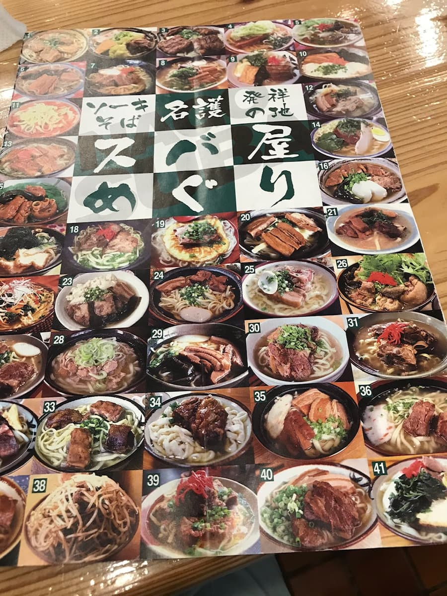
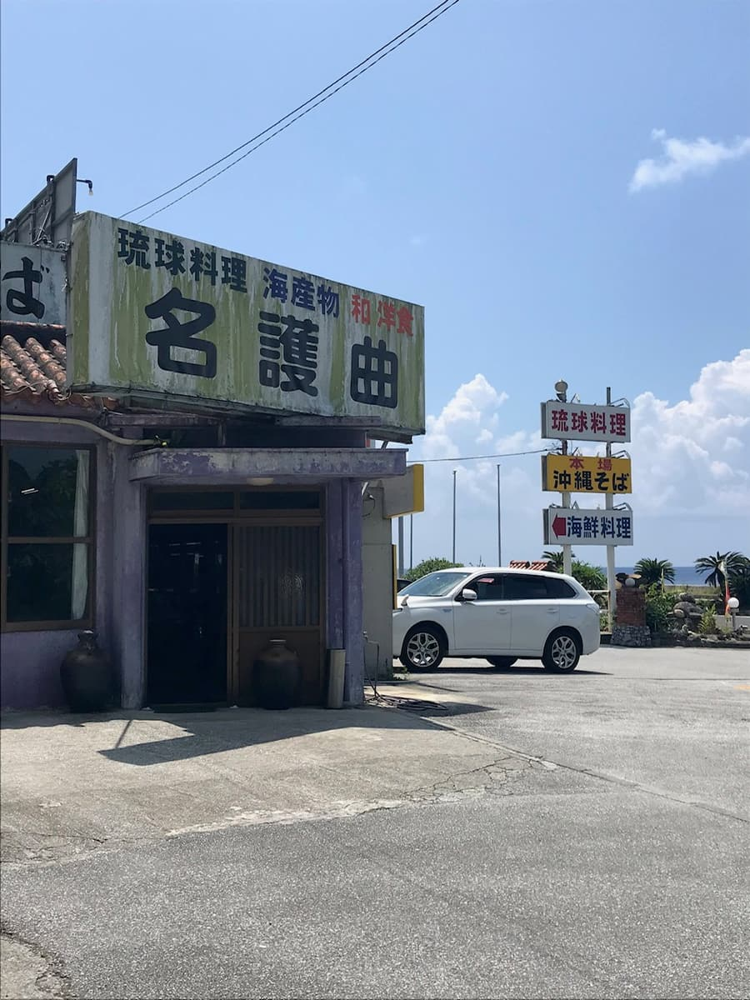
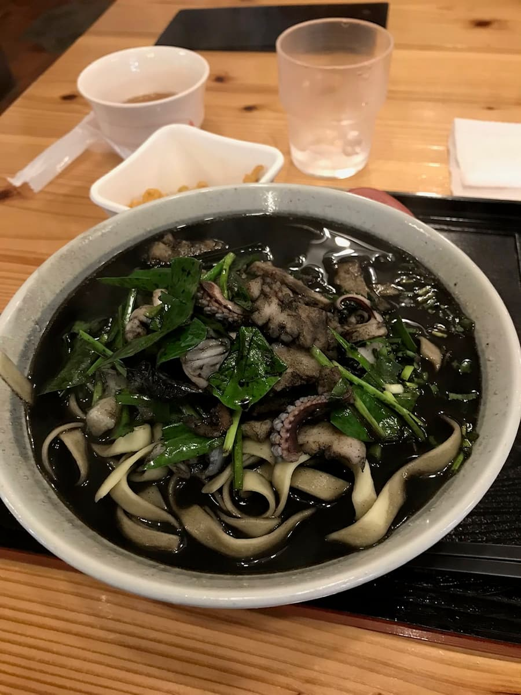

I went to this shop in August 2020 after seeing the "Nago City Soba Map."

Looking back at my Twitter from that time (I'm writing this blog now in March 2023), it seems many shops were temporarily closed because of COVID, and it felt like that day I finally found a shop that was open.

COVID has really hurt restaurants in Okinawa. I hope they hang in there.
Nago soba tour, part 6〜 Squid ink soba at "Nagumagai"〜 lol A soup of squid ink and bonito broth, with plenty of seafood toppings—squid—and slightly bitter fuchiba (mugwort). The noodles were flat and delicious. I checked shops here and there, but many were temporarily closed due to COVID; the economy is tough. (— Anji, from a post on August 14, 2020)
This time I ordered the "Squid Ink Soba," which was introduced in the "Nago City Soba Map." I'd never even had squid ink pasta or anything like that, so I was nervous about trying squid ink for the first time in my life 😁

With the pitch-black soup, it's hard to imagine how it tastes from the look of it, but it's bonito broth-based and solidly tasty ☺ As I tweeted, there are plenty of toppings—seafood in the form of squid—and the bitterness of the fuchiba (mugwort) is a nice accent; delicious 😁
The noodles are flat, which you occasionally see at soba shops in Nago.
Rating (9/15): The look is shocking lol, but when you eat it, it's surprisingly gentle, and I realized I'd been dismissing squid ink without ever trying it ☺ For people who are tired of regular Okinawa soba, I think it's a nice change of pace.
PS: It's fine while you're eating it, but in the following days, I think what comes out when you go to the bathroom (number two) will be pitch black. It's startling lol So please keep that in mind lol
Noodles: ★★★☆☆（3）
Soup: ★★★☆☆（3）
Toppings: ★★★☆☆（3）